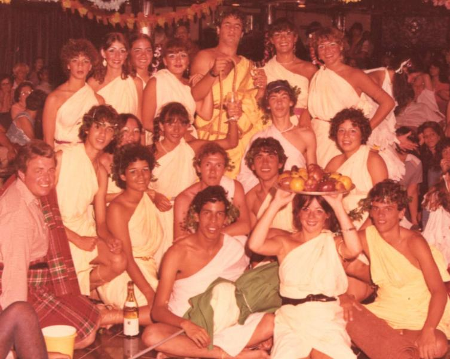

| Irma Gerstel | Vera Gavison | Elaine (Laly) Bello | Ma. Carolina (La Gorda) Ponce | Nicolas Cirigliano | Beatriz Warken | Jetty Mazzei |
| Ernesto Parra | Isabel Ley | Laura Orozco | Hector Morán | Cristina (Cris Pereyra) | ||
| (Escocés Coleao) | Marta Morales | Nelson (Portu) Guerreiro | José Rafael Plessman | |||
| Eduardo (Caballo) Villasmil | Gabriela (Gaby) Mayansky | Janos (Janchi) Sandor |
Copyright © 1999-2012 Juancarlo Añez, Caracas, Venezuela.
| volver a friedman81 |